Coolzoone
The bright side of longevity: technology that works, wrapped in an experience you want to repeat.
- Leading longevity technology, served with a sense of play
- You feel it in minutes and see it over time
- Shaped to the place: a centre, a club or a private residence
- Guests come for the effect and stay for the people
- A complete concept: brand, technology, protocols and team training from one hand

Good for you,
made for joy
Longevity technology, presented like a playground for adults.
Coolzoone gathers the leading cold, oxygen and light technologies, and the most interesting well-being innovations, under one roof. And it leaves out everything that usually comes with them: the clinical corridor, the white coats, the feeling of being a patient. Because well-being and longevity do not come with a thousand blood tests, though they may reveal something medical.
Longevity and well-being come with a lifestyle that brings joy, purpose, courage and love. Coolzoone takes the best the high-tech world has to offer and serves it in an attractive way, with an effect you can feel, because the treatments that work best are the ones people love coming back to.
Day or
Afterwork
An open prevention and recovery centre. Book a single session, a signature experience or a programme. Accessible, evidence-based and fairly priced.
A private, invitation-only club. Unlimited evening access, guided routes or freestyle, and the social side of longevity.
- Day · access
- Open to everyone, by appointment
- Afterwork · access
- Members only, by application
- Day · model
- Per session, packages
- Afterwork · model
- Membership, unlimited access
- Day · feel
- Prevention, recovery, personal guidance
- Afterwork · feel
- City, evening light, no clinical feel
From the Atlantic
to the Alps
Three places where you can feel it today. Each one different, each one unmistakably Coolzoone.
Atlantic air outside, −110 °C inside: home of the largest cryo chamber in the world, set in a walk-through circle of cold and light.
coolzoone.pt ↗︎The city's recovery address by day, its most wanted club after dark. Trusted in Zürich since 2021.
coolzoone.ch ↗︎Mediterranean light and sea air, with cold, light, flow and oxygen to take home the holiday feeling in your body.
bluezone-mallorca.com ↗︎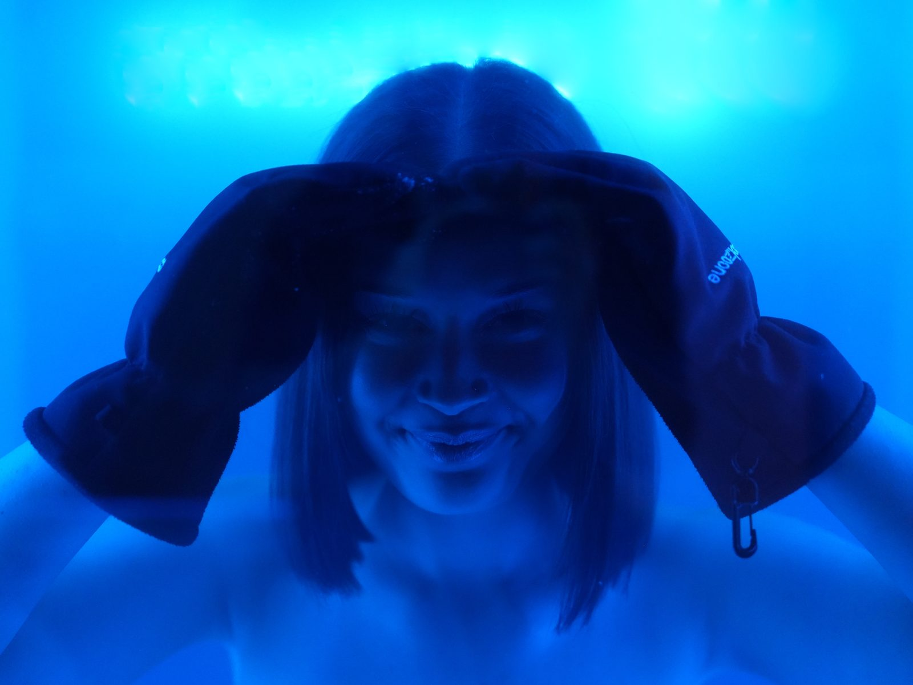
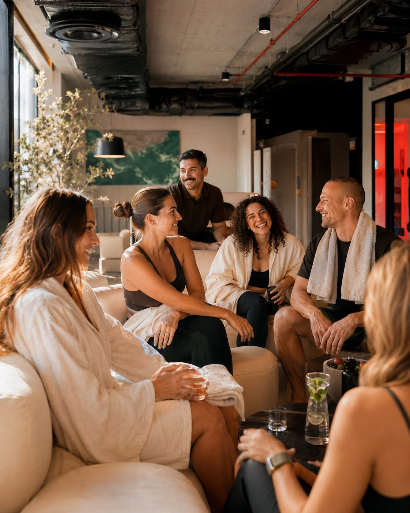
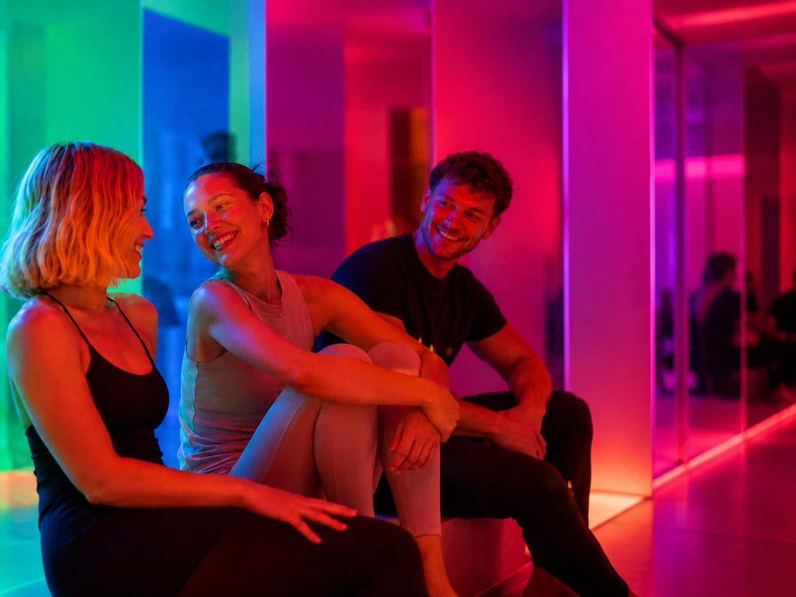
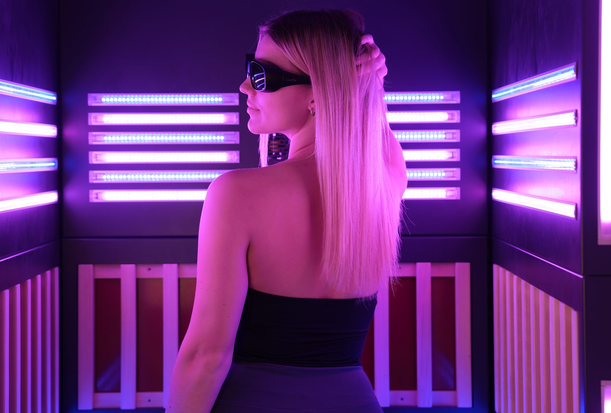
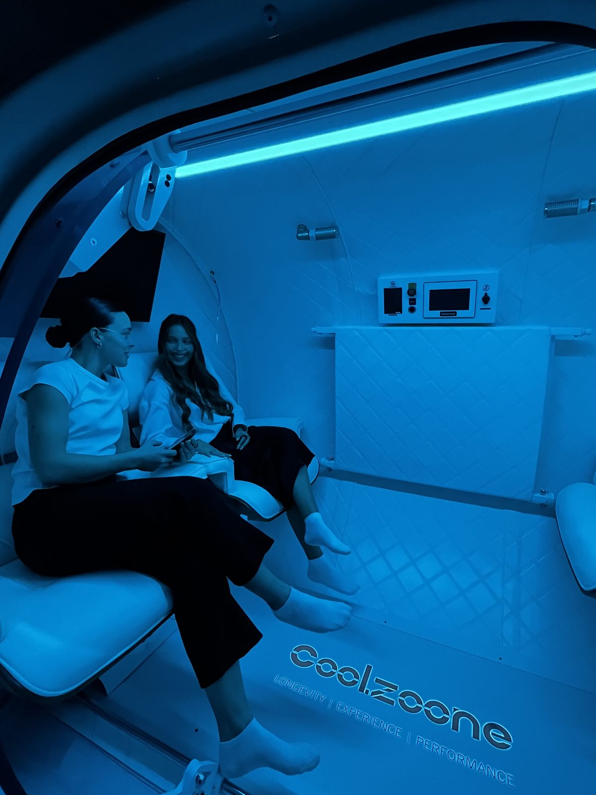
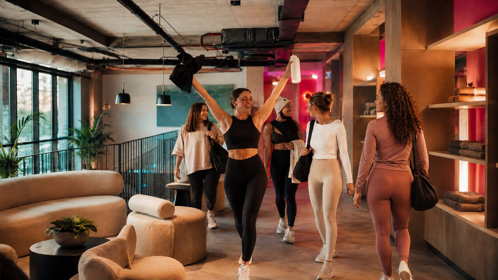
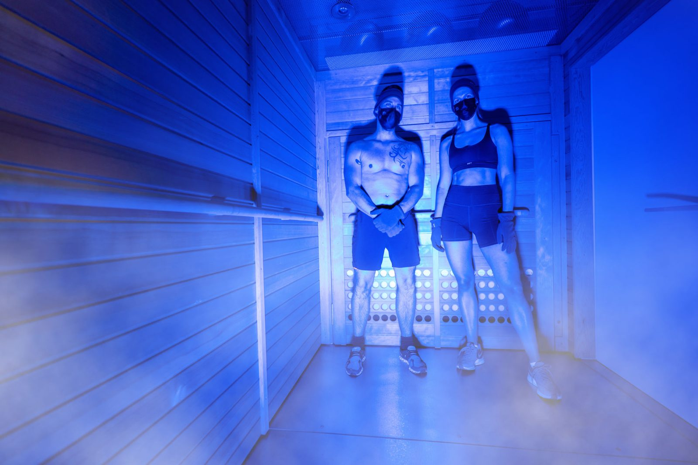
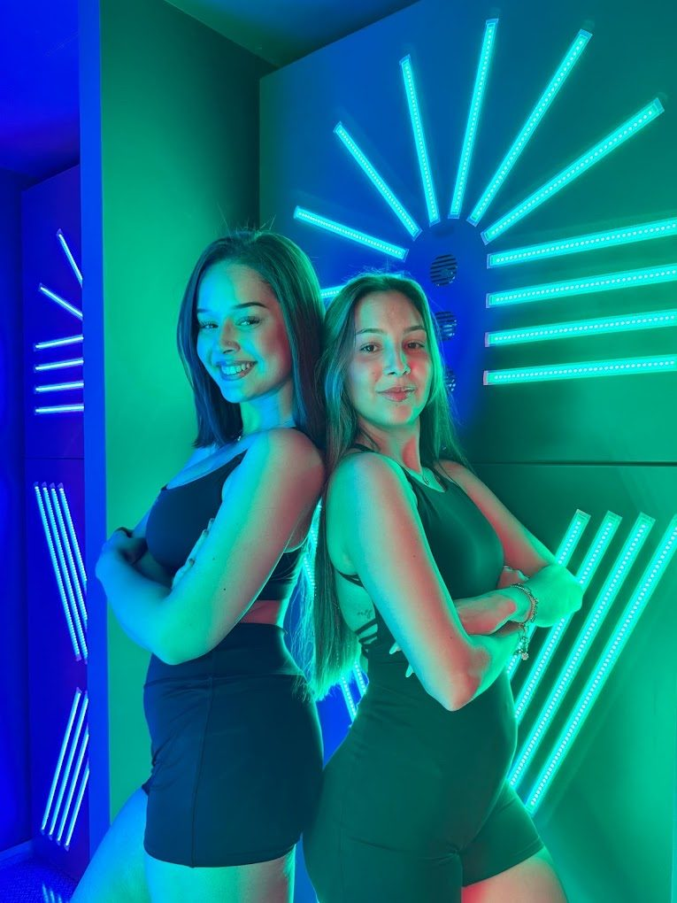
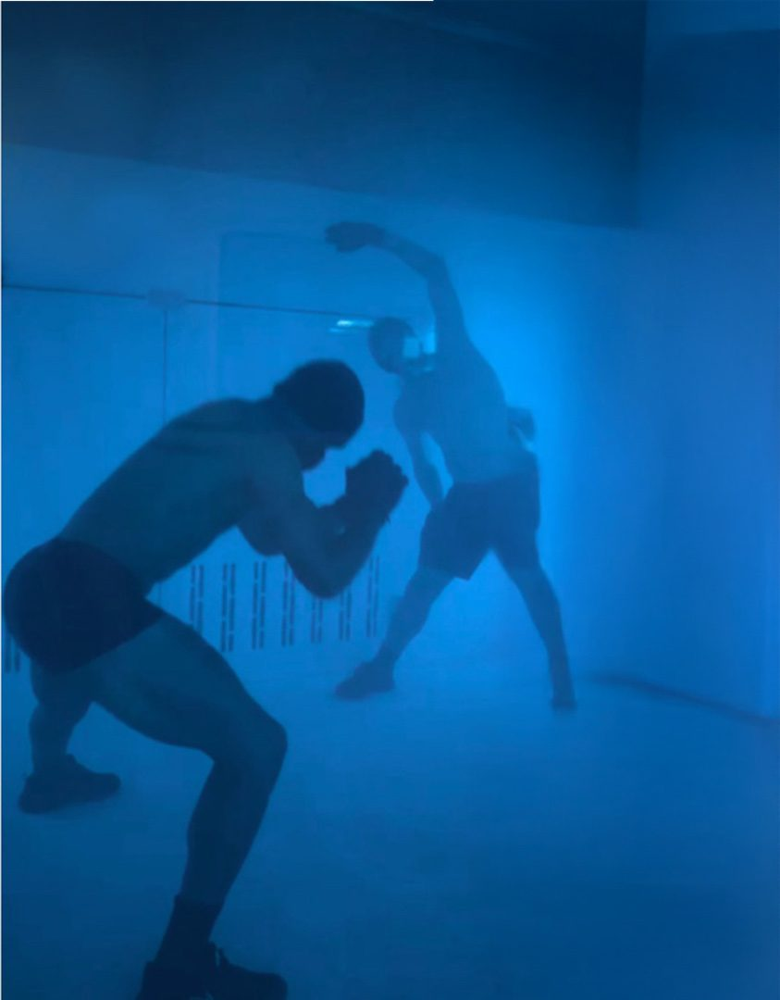
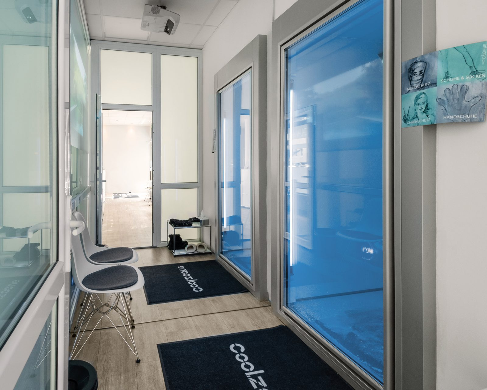
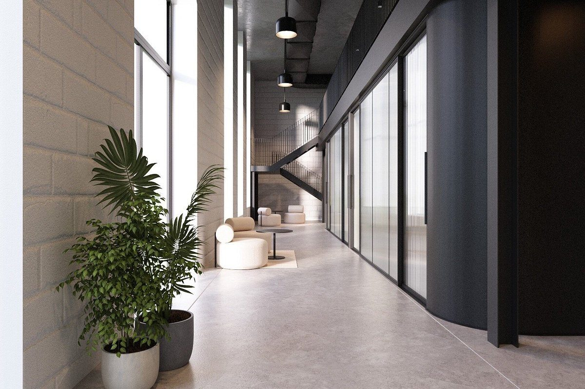
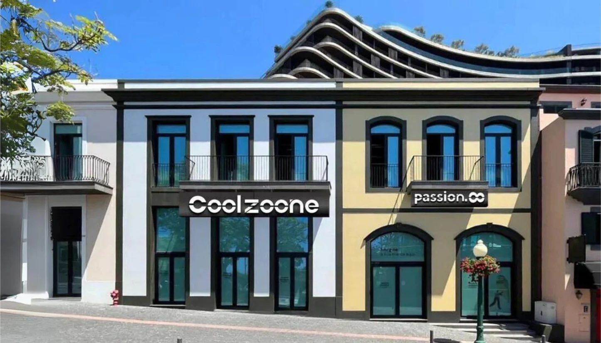
Best in class,
for your place
Every Coolzoone is built from best-in-class longevity technology. But best is never a matter of taste. It is what works for this location, these guests and this business case, chosen from years of running real centres, not from a catalogue.
One experience to activate. One to reset. One to restore. One to rehydrate. One to regenerate. And every one of them to enjoy.
We call it the Total Systemic Method: body and mind treated as one, in a short, precise rhythm of stimulus and recovery. You will call it your favourite part of the week.
- Whole-body cryo chamber, top of its class
- Two-seater HBOT chamber, smart protocols up to 2 ATA
- IHHT, interval hypoxic-hyperoxic training
- Molecular hydrogen inhalation
- Full-body charger with cold atmospheric plasma
- Multi-sensory infrared & light cabin
- Touchless deep body flow stimulation
- 3D body analysis
Trust
MCRC
Speak to a specialist ↗︎MCRC AG, Zürich: Swiss standards in selection, service and responsibility.
Every technology meets European and international safety standards and holds EU product safety certification.
Every technology we offer runs daily, in our own venues and with operators worldwide.
Prevention
and repair
Bring the stiff shoulder, the jet lag, the week that never ended. Leave with a lightness in body and mind you forgot you had.
How you feel in 20 years starts with what you do now, and that is good news, because Coolzoone turns it into healthy habits you actually enjoy. Some days you arrive exhausted and want nothing more than to rest. Other days you come full of energy and ready for more.
Smart software and people who know their craft read the day with you and choose what to combine, so each visit meets you where you are and builds on the last. You come because it feels good today, and you keep coming because, over the months, it becomes an investment in many good years.
- To feel like yourself again. Not tired all the time, not stiff in the morning, not dragged through the week.
- To keep up. With your kids now, with your grandchildren later, with friends on the ski slope or the hiking trail.
- To switch off. Really rest, and sleep without lying awake with your head still at work.
- To stay independent. Strong enough at 70 for the things you love, and never a burden.
- To look good. We rarely say it, but it matters a lot.
- To belong. To have a place and people, not a treatment room.
- To feel in control. You know you can do something for your future, without becoming a patient.
Work ends.
You begin.
Zürich's afterwork longevity club. Feel good today. Stay strong tomorrow.
Evenings belong to the things you love: family, sport, friends. Coolzoone Afterwork finds its place among them, and soon becomes one of the hours you look forward to all day. Warm light, music, technology you want to come back to, and people you are happy to see again: a club where longevity is something you share, not something you do alone.
Members choose the outcome they are looking for tonight, and the club does the rest. From more than 40 expert-designed protocols, it guides them through the right combination of experiences, in the right order. Some nights it is 30 minutes on the way home. Some nights it lasts until closing, with a long, deep regeneration at the end.
Come as you are after the day.
Longevity is a long game. Consistency beats intensity.
Architectural, a little underground, and entirely yours after dark.
Could be
yours.
Become part of a circle small enough to know each other, and big enough to meet someone new every evening.
A membership is your key to the club: 12 months of unlimited evening access, Monday to Saturday from 19:00 to 23:55, to the technologies of your membership level and the full protocol library. Applications for Zürich are open now.
- Smart: every core experience, every evening
- Bright: unlocks the premium experiences and more routes
- Bright Plus: Bright, with a plus one
- Ultimate: bring your friends, plus a private longevity night of your own
- Ultimate Business: transferable membership for companies
Ready to
travel
Coolzoone is MCRC's blueprint for any longevity or recovery location that wants to grow without adding space: a daytime centre and an evening club, run on the same equipment.
Both identities, tone of voice and member journey.
The right device mix for the space and both time slots.
Cross-protocols and routes, delivered through Performance Concierge.
Pricing, membership tiers, capacity planning and the handover between day and evening.
Always
support you
Before and after the sale, our team answers whatever you and your guests need to know.
Your team learns to use it, explain it and recommend it.
Models, pricing and integration, personally.
Bring Coolzoone
to your city.
Interested in the concept for your location? We'll show you how Day and Afterwork work together.